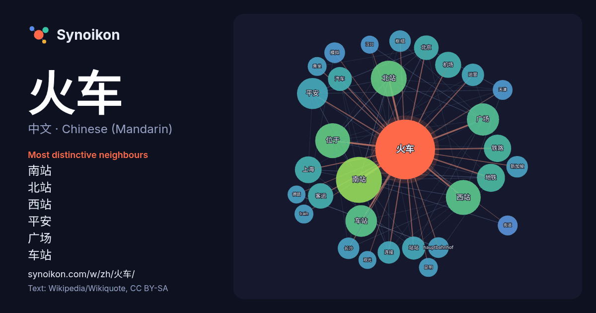

中文 · Chinese (Mandarin) · word of the day list
火车
“train” · The words found around it in 825 instances from Chinese (Mandarin) Wikipedia, Wikiquote.

Most distinctive neighbours
- 南站 56×
- 北站 35×
- 西站 33×
- 平安 26×
- 广场 25×
- 车站 21×
- 位于 20×
- 地铁 20×
- 客运 17×
- 机场 16×
- 站站 16×
- 汽车 14×
- 铁路 13×
- 长沙 13×
- 枢纽 13×
- hauptbahnhof 13×
- 上海 13×
- 运营 12×
- 连接 12×
- 模拟 12×
× = how many times more often than in general Chinese (Mandarin) Wikipedia text.
Most frequent neighbours
- 南站 59
- 北站 36
- 位于 34
- 西站 34
- 广场 29
- 车站 28
- 平安 27
- 地铁 22
- 铁路 21
- 上海 20
- 中国 19
- 机场 19
- 客运 18
- 北京 17
- 城市 17
- 汽车 16
- 前往 15
- 站站 15
- 交通 14
- 运营 14
In context
- 柏林火车总站（德語：Berlin Hauptbahnhof），又譯為柏林中央車站，是德国首都柏林最重要的铁路枢纽（德语：Eisenbahnknoten），以及欧洲最大的高架车站。凭借着日均约30万人次的旅客到发量，它也是德国運量第四大车站，僅次於汉堡火车总站、慕尼黑火车总站與法兰克福火车 Wikipedia snippets · 柏林火车总站
- 《火车》是台湾音乐人罗大佑演唱的一首歌曲，由李坤城作词，罗大佑作曲，花比傲编曲。歌曲收录于罗大佑的首张闽南语专辑《原乡》，于1991年9月26日随专辑发行。 《原乡》于1991年9月26日发行，为罗大佑首张闽南语专辑，共收录9首歌曲，《火车》为其中之一。 《火车 Wikipedia snippets · 火車 (歌曲)
- 融等优质资源配套服务，城区整体发展建设成熟，是乌鲁木齐最具有多民族商贸特色，城市游憩商业区及生产性服务业聚集的城市中心区，该片区的两大核心商贸区域为火车南站商贸城商业区及二道桥民族商业贸易中心。 城东 根据2021年出台的《乌鲁木齐市城东片区控规提升及河马泉新区控制性详细规划》，东部片区东至东绕城高 Wikipedia snippets · 乌鲁木齐市
- 《火车梦》（英語：Train Dreams）是2025年上映的美国历史剧情片，由克林特·本特利（英语：Clint Bentley）执导，本特利与格雷格·奎达（英语：Greg Kwedar）联袂编剧，改编自丹尼斯·约翰逊（英语：Denis Johnson）2011年出版的同名小说（英语：Train Wikipedia snippets · 火车梦
- 京张铁路青龙桥车站同时开行的火车，呈现出“之字形” Wikipedia snippets · 清朝
- 《火车进拉西奥塔站》（法語：L'Arrivée d'un train en gare de La Ciotat）是法国卢米埃尔兄弟于1896年1月25日在巴黎首映的一部黑白无声短纪录片。这部电影常被错认为是第一部电影，尽管“最早放映”的电影以及“最早生产”的电影分别是1895年的工厂大门和1888年的 … Wikipedia snippets · 火车进站
- 火车东站站位于中华人民共和国浙江省杭州市上城区杭州东站，是杭州地铁1号线和4号线的一个换乘站点。 火车东站站站体位于杭州东站东西广场联络通道下方，出站后穿过东广场，向东进入彭埠街道。該站於2013年6月30日，即新杭州东站启用前一日投入使用，4号线一侧站台于2015年2月2日启用，但4号线的屏蔽门 Wikipedia snippets · 火车东站站 (杭州地铁)
- 1909年，京张铁路上的西直门火车站 Wikipedia snippets · 北京市
More Chinese (Mandarin) words
Precomputed on 2026-10-09 with default settings (±5 words, medium corpus). The interactive map can refresh it with live data.